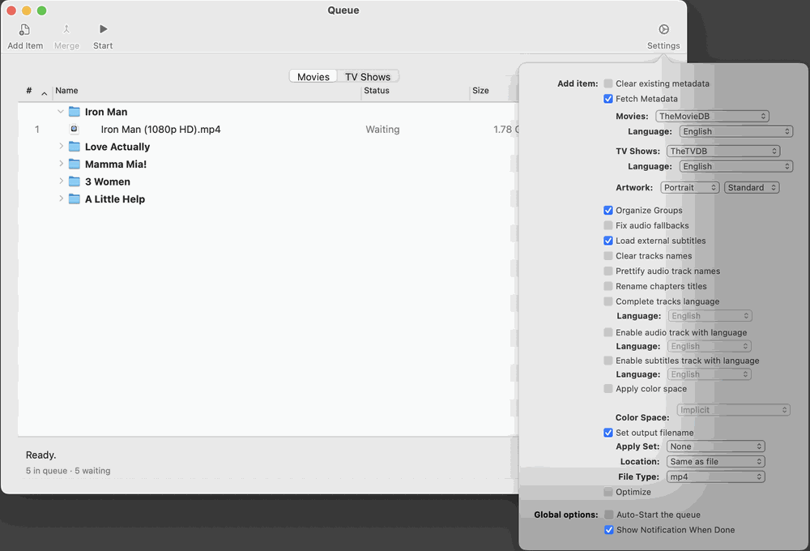

The Settings button reveals the options applied to items you add by hand and to released items as they are processed:

The Queue Options panel.
Global options:Auto-Start the queue; Show Notification When Done (macOS asks permission the first time).
Location and File Type (mp4 or m4v) for the output.
Apply Set (applied after the online search, for hand-added files and Intake releases alike: the tags the Set fills in replace the searched values, and tags it leaves blank keep them), Fetch Metadata and the provider language for Movies and TV Shows, Artwork shape (Portrait, Landscape, Square or Rectangle), Existing tags (what the search does with tags a file already has: Use Settings, which follows Settings > Metadata, Fill missing only, Append (add artwork) or Overwrite; with the last three, Keep empty annotations can be ticked), and Set output filename.